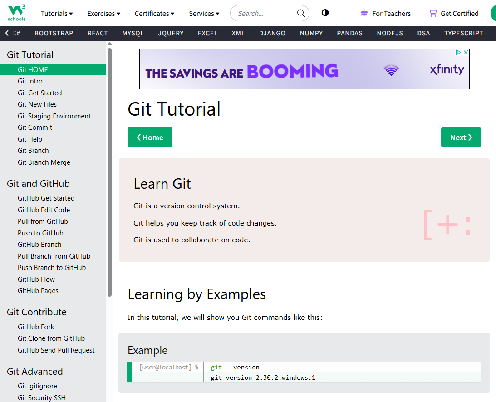
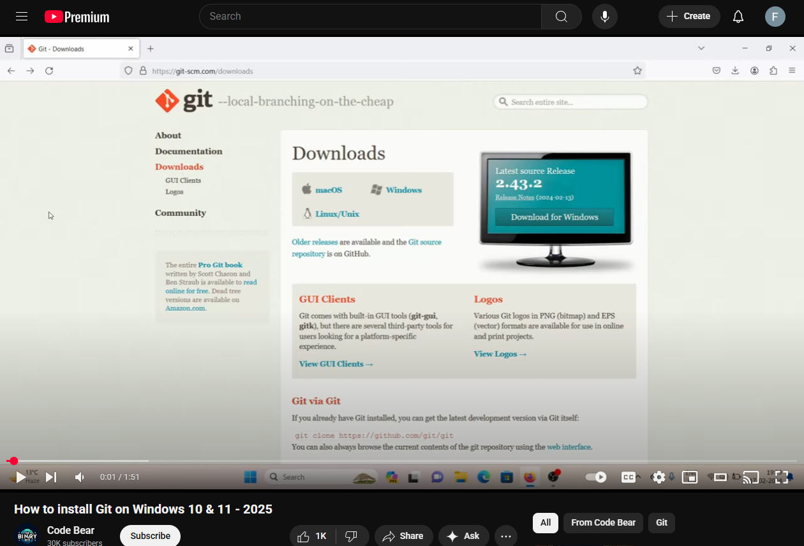
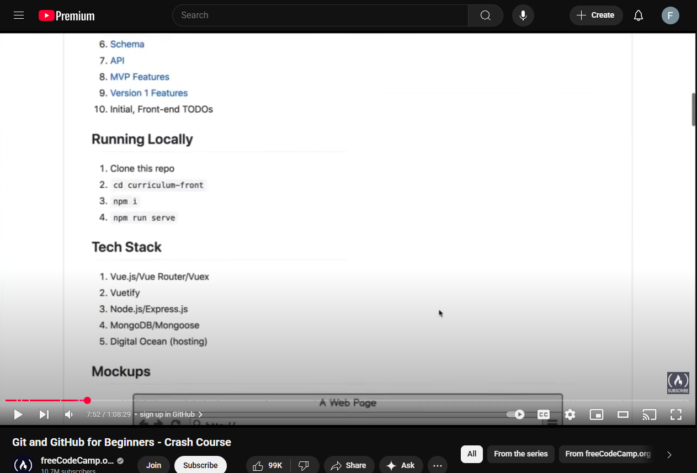

RESOURCES
Resource Abstracts
Overview
A handbook created by GitHub – a platform that utilizes Git to its greatest capacity – that generalizes the terms and features surrounding Git. GitHub itself is a website that helps people work together within coding environments. This handbook explains how Git works as a tool that keeps track of changes in code and makes collaboration work easier. The handbook provides an overview of what Git does and how GitHub uses Git to make group projects easier.
The page primarily talks about Git as it explains what it is, how it works, and why it is useful for consumers. Then it teaches a couple features of Git – repositories, commit, branches – which happens to be the scope of my online guide. Besides that, though, there is plenty of other information in other sections that is beyond my focus but could prove useful.
This information is very useful in prefacing the entire concept of Git and GitHub, especially for beginners. It provides a brief explanation of how version control works in a way that people can understand and be confident about before using Git/GitHub.
Tips for using the Website
Overview
A Wikipedia article about Git by numerous editors that references the creator of Git, Linus Torvalds – a respectable software engineer who is the creator and developer of Linux. It is meant to give a full but general overview of what Git is and how it works today, with tracks of its history.
For the introduction, the page covers the history of Git down to the technical details and related tools. Then, the focus shifts toward the several components of Git (characteristics, data structures, commands, implementations, etc.) with very detailed explanations that I would consider is not quite beginner friendly. My scope is towards the characteristics of Git.
This information is very useful for people who wish for a deeper understanding of Git that is beyond GitHub as it provides the historical context of Git. For beginners, using this page could be more effective as a supplement after reading a simpler document such as the GitHub docs which might not provide enough information that they expect from it.
Tips for using the Website
3. Git and GitHub Introduction (W3Schools)
Overview
An online tutorial made by W3Schools, a website known for teaching web and programming skills (Python, Java, etc.) in a manner that is very beginner friendly and simple. It is built to help people learn through interactive activities and lots of examples.
The Git section of W3Schools explains how to use Git step-by-step through short lessons, examples and code snippets. Moving to other sections leads to Git commands (init, add, commit, push) which is my scope from this page, and others such as setting up Git on a computer and working with GitHub.
This information is perfect for beginners who are active learners that find constructive learning much better than just reading or listening to the information. For my purpose, it helps introduce the core features of Git in a way that builds confidence and understanding through hands-on practice.
Tips for using the Website
4. How to install Git on Windows 10 & 11 - 2025 (Code Bear)
Overview
A YouTube video published by Code Bear. The video provides a hands-on guide that users can follow along with through visual cues.
The video explains how to install Git on windows 10 and 11 in 2025, step-by-step, with examples. The video covers the websites needed and what to download.
The video is extremely useful for visual learners or people that unable to properly install Git on their computers.
Tips for using the Website
Overview
This is a guide created by Codecademy, a popular online platform for learning to code. The main page is designed for quick look ups for people to use.
The page features a brief overview of Git on the landing page which then directs you to various Git concepts that can be clicked on and sent to corresponding pages that emphasize the selected concept. My scope for this page is based on a select few of Git concepts: Add, Branch, Clone, Commit, etc. I am cross-referencing W3Schools for this part.
This information is useful for beginners to learn about specific Git concepts separately without feeling cluttered. The users can easily trace back to a concept that they have read about without having trouble searching for it. It works well as a support tool alongside other coding practices or lessons such as the other documents in this list.
Tips for using the Website
6. Git and GitHub for Beginners – Crash Course (YouTube Video)
Overview
A YouTube video published by freeCodeCamp.org of a Git and GitHub crash course spanning an entire hour made for beginners. The video provides a hands-on guide that users can follow along with through visual learning and curated slides and plenty of code snippets.
The video explains what Git and GitHub are, why they’re very useful, and shows step-by-step on how to use them with commands and examples. It provides a foolproof way of learning by following the lead of the video that covers everything you need to know of the topics. My scope for this video focuses on terminologies and Git commands.
The video is extremely useful for visual learners or people that are stuck on certain steps of Git or GitHub. It is ideal for beginners that want to see how Git functions in real time instead of reading long paragraphs about it. The video helps to break down key concepts into more digestible content that is overall less intimidating.
Tips for using the Website